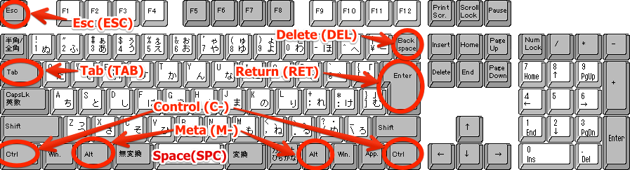

第3回 アカデミックスキルI レポートの作成技術(1)
Table of Contents
1 このページの更新履歴
2 テキストエディタ Emacs 入門
2.1 起動方法
2.1.1 Cent OS の場合
左下のメニューから，ユーティリティ→エディタ→Emacs テキスト・エディターを選択
2.2 特殊キーとキーバインド
2.2.1 特殊キー
Emacs では特殊キーと呼ばれるキーを活用する． ICL演習室に設置されている 109キーボード では，特殊キーは以下のように割当てられている．
| 特殊キー名 | 省略表記 | キーボード上のキー |
|---|---|---|
| Control | C- | Ctrl |
| Meta | M- | Alt |
| Super | s- | 割当て無し |
| Space | SPC | Space |
| Return | RET | Enter |
| Tab | TAB | Tab |
| Delete | DEL | Backspace |
| Esc | ESC | Esc |
 (著作権フリー画像)
2.2.2 キーバインド：同時押しと順次押しの組み合わせ
Emacs では，特殊キーとそれ以外のキーの組み合わせ(キーバインド)によって多彩な操作が可能である． 全てのキー操作は 同時押し と 順次押し で構成される．
- 同時押し
- 特殊キーとそれ以外のキーを 同時 に押すこと．ハイフン(-)で表現される．
-
C-g - Control と g を同時に押す
-
M-x - Meta と x を同時に押す
-
C-x-n - Control と Meta と n を同時に押す
-
- 順次押し
- あるキーや同時押しの 後で , 別のキーや同時押しを入力すること．空白( )で区切って表現される．
-
C-x C-s - C-x の後で C-s を入力する
-
M-x info - M-x の後で
infoと入力する -
C-x RET f - C-x, Return, f の順に入力する
-
2.3 基本的な操作
2.3.1 起動，キャンセル，そして終了
起動方法については口頭で説明．
-
C-g(keyboard-quit) - 最初のうちは，Emacs の操作中に意図しない画面が出てきたりしてパニックになるかもしれない．そういう時は慌てず騒がず
C-gを押そう．多くの場合，これで操作がキャンセルされる．それでも駄目な場合には，以下のC-x C-cを使ってEmacs を終了させて再起動てみよう． -
C-x C-c(save-buffers-kill-terminal) - Emacs を終了させるには
C-x C-cというキーバインドを利用する．保存されていない編集中のバッファは消えてしまう．そういうバッファがあれば，その都度，ミニバッファに以下のような警告が出る．Save file /Users/foo/test.txt? (y, n, !, ., q, C-r, d or C-h)
ここで
C-hを押せば，どのキーにどんな機能が対応しているかが一覧できる．キー 説明 SPCもしくはyこのバッファを保存 DELもしくはnこのバッファは保存しない(編集は破棄される)(※) RETもしくはq残り全てのバッファを保存しない(※) !残り全てのバッファを保存する C-rこのバッファを見る dこのバッファの 差分 を見る C-hヘルプを表示させる ※ 保存されないバッファがある場合は，さらに
Modified buffers exist; exit anyway? (yes or no)
(修正されたバッファが存在します．それでも終了しますか？)と表示される．ここで,
yes RETと入力すれば，編集は破棄され，Emacs は終了する.no RETと入力すれば，終了がキャンセルされ，操作前の画面に戻る．
2.3.2 カーソルの操作，文字の入力・消去
Emacs では，十字キーではなく，キーバインドでもカーソルを操作できる．最初は十字キーの方が楽なように思うだろうが，慣れてくると十字キーに手を伸ばすのが億劫になってくるはずだ．最初の画面(eshell)で色々試してみよう．
| キーバインド | 動作 |
|---|---|
C-f または <right> (forward-char) |
カーソルを右(前)へ |
C-b または <left> (backward-char) |
カーソルを左(後)へ |
C-n または <up> (next-line) |
カーソルを下(次の行)へ |
C-p または <down> (previous-line) |
カーソルを上(前の行)へ |
C-a (move-beginning-of-line) |
カーソルを行の先頭へ |
C-e (move-end-of-line) |
カーソルを行の末尾へ |
M-f または ESC <right> (forward-word) |
カーソルを1単語右(前)へ |
M-b または ESC <left> (backward-word) |
カーソルを1単語左(後)へ |
C-v (scroll-up-command) |
カーソルを1画面下(次の画面)へ |
M-v (scroll-down-command) |
カーソルを1画面上(前の画面)へ |
C-M-v (scroll-other-window) |
ウィンドウ分割時に他のウィンドウに対して C-v |
C-M-S-v (scroll-other-window-down) |
ウィンドウ分割時に他のウィンドウに対して M-v |
M-< (beginning-of-buffer) |
カーソルをバッファの先頭へ |
M-> (end-of-buffer) |
カーソルをバッファの末尾へ |
M-g (goto-line) |
指定した行へ移動．ミニバッファに Goto Line: と表示されるので，行番号を入力して RET すると移動． |
C-q (quoted-insert) |
特殊文字を入力する(タブ文字を入力するには C-q TAB とする) |
DEL (delete-backward-char) |
カーソルの 前 の1文字を消去 |
C-d (delete-char) |
カーソルの 後 の1文字を消去 |
2.3.3 ファイル操作 / バッファ操作
Emacs でウィンドウに表示されるのは，メモリ上にのみ存在する バッファ である．バッ ファはディスク上に実在する ファイル と明確に区別される必要がある．
C-x C-f で「ファイルを開く」とそのファイルの内容がバッファに読み込まれ，
C-x C-w や C-x C-s などで「ファイルを保存」すると，そのバッファの内容がファイルに
書き込まれる．
ウィンドウ上に表示されるバッファを切り替えるには C-x b や C-x C-b を用いる. C-x の後に左右カーソルキーを入力する(C-x <left> / C-x <right>) ことでバッファを次々と切り替える機能も便利．バッファを閉じるには C-x k を用いる．
| キーバインド | 動作 |
|---|---|
C-x C-f (find-file) |
ファイルを開く(ie. ファイルの内容をバッファに読み込む) |
C-x C-w (write-file) |
ファイルを別名で保存する(ie. バッファの内容をファイルに書き込む). ミニバッファにファイル名を入力して RET を押すと保存する． |
C-x C-s または s-s (save-buffer) |
ファイルを上書き保存する(ie. バッファの内容を開いたときのファイル名で保存) |
C-x s (save-some-buffers) |
全てのファイルを上書き保存する |
C-x b (switch-to-buffer) |
バッファを切り替える．ミニバッファ上で開きたいバッファ名を入力. TAB を押すと補完候補が一覧できる． |
C-x k (kill-buffer) |
バッファを消去する．ミニバッファに Kill buffer (default foo): と消去するバッファ名を入力でき, RET を押すとそのバッファが消去される．デフォルトは呼び出し時にアクティブだったバッファ(※) |
C-x <left> (previous-buffer)および C-x <left> (next-buffer) |
バッファリストにある前/次のバッファに切り替える． |
C-x C-B (list-buffers) |
バッファリストを表示する． |
※バッファが編集中で保存されていない場合にはミニバッファに
Buffer foo modified; kill anyway? (yes or no)
(foo という名前のバッファは保存されていません．それでも消去しますか？)と質問される. yes RET で編集を破棄してバッファを消去. no RET でバッファの消去をキャンセル(C-g でもキャンセル可能)．
2.3.4 ウィンドウの分割
Emacs では，1つのフレームの中にいくつものウィンドウを作り，それぞれに別々のバッファを表示させられる．
C-x 2 / C-x 3 で上下/左右に分割でき, C-x 0 や C-x 1 で分割を解除できる(C-x C-b などで意図せずにウィンドウが分割されたのを戻すのに頻繁に使う)．
ウィンドウを閉じてもバッファは消去されない．
| キーバインド | 動作 |
|---|---|
C-x 2 (split-window-below) |
現在のウィンドウを上下に分割する． |
C-x 3 (split-window-right) |
現在のウィンドウを左右に分割する． |
C-x 1 (delete-other-windows) |
現在のウィンドウ以外を閉じる． |
C-x 0 (delete-window) |
現在のウィンドウを閉じる． |
C-x o (other-window) |
次のウィンドウにフォーカスを移動 |
2.3.5 マークとリージョン
Windows ではshift を押しながら上下左右で「範囲」を選択してコピー/カットできた． この機能は Emacs にも マーク と リージョン という(少し操作し辛い)形で存在する．
C-SPC でマークしてからカーソルを移動させると，マークと現在のカーソル位置までが
選択範囲(リージョン)となる. C-g とすればリージョンとマークを取り消せる．
M-h で段落を選択, C-x h でバッファ全体を選択(narrowingされている場合は当該箇
所), C-x C-p でページ全体を選択．
M-w でリージョンをコピー, C-w でリージョンをカットできる．コピー/カットされた
リージョンは，クリップボードに相当するキルリング(kill-ring)に保存され, C-y で直
前のキルリングの内容をヤンク(ペースト)できる．その際, C-y に続けて M-y を入力
することでキルリングを次々にさかのぼってヤンクできる．
リージョンを選択しておいて M-; とすると，当該リージョンをコメントアウトする．コ
メントアウトされた領域を選択して M-; とするとコメント解除する．
| キーバインド | 機能 |
|---|---|
C-SPC (set-mark-command) |
マーク |
M-w (kill-ring-save) |
リージョンをキルリングにコピー |
C-w (kill-region) |
リージョンをカット |
C-y (yank) |
リージョンをヤンク(ペースト) |
M-y (yank-pop) |
キルリングを次々さかのぼってヤンク |
M-h (mark-paragraph) |
段落をマーク |
C-x h (mark-whole-buffer) |
バッファをマーク |
C-x C-p (mark-page) |
ページ全体をマーク |
2.3.6 検索・置換
C-s / C-r でバッファを順方向/逆方向に検索. C-M-s / C-M-r で正規表現による順方向/逆方向の検索．
検索された文字列を別の文字列で置換するには M-% / C-M-% (対話型の置換/正規表現置換)
もしくは M-x replace-string / M-x replace-regexp (一括の置換/正規表現置換)を使う．
-
C-s(isearch-forward) - 順方向にインクリメンタル検索．ミニバッファに
I-search: [aa]と出るので，文字列を入力すると現在のカーソル位置以降で当該箇所にマッチする場所を表示.RETで移動,C-gでキャンセル．文字入力中に再びC-sを押すと，次の検索結果へジャンプ． -
C-r(isearch-backward) - 逆方向にインクリメンタル検索．上述の検索をカーソル位置からバッファの先頭に向かって行う．
-
C-M-s(isearch-forward-regexp) - 順方向に正規表現検索．ミニバッファに
Regexp I-search: [aa]と出るので，正規表現を入力すると，現在のカーソル位置以降で当該箇所にマッチする場所を表示． -
C-M-r(isearch-backward-regexp) - 逆方向に正規表現検索．上述の正規表現検索をカーソル位置からバッファの先頭に向かって行う．
-
M-%(query-replace) - 対話型の置換．ミニバッファに
Query replace (default *****):と出るので， 検索する文字列RET置換する文字列RETと入力する．
2.4 アンドゥ
直前の入力内容を取り消したい場合には C-/ (C-_ または C-x u でも可能)．
2.5 日本語の入力
情報基盤センターの Emacs の日本語入力メソッドは kkc が入っている模様．
2.5.1 日本語入力切り替え
C-\ (toggle-input-method) で日本語入力/英数字入力を切り替え(toggle)できる．
日本語109キーボードでは， \ は DEL キーの一つ左の「￥」マークで入力できる．
2.5.2 入力モード
入力モードによって，モードラインの左端の記号が変わる．
- AあU:
- 日本語入力モード.
SPCで漢字変換モード,qqで英数入力モード,qzで全角英数入力モードに切り替え． - 漢U:
- 漢字変換モード.
C-cで日本語入力モードに切り替え． - AaU:
- 英数入力モード.
qqで日本語入力モードに切り替え． - ＡU:
- 全角英数入力モード.
qhで日本語入力モードに切り替え．
2.5.3 キー割り当て一覧
| キー | 機能 |
|---|---|
K |
カタカナ/ひらがなを切り替える |
SPC |
変換モードにする |
C-c |
変換モードを抜け出す |
RET |
確定 |
DEL |
1文字消去 |
C-i |
文節を1文字縮める |
C-o |
文節を1文字伸ばす |
C-f |
次の文節に移動する |
C-n |
次の変換候補を表示する |
C-p |
前の変換候補を表示する |
l/L |
変換候補リストを表示する(続いて l/L を押すと次/前の候補リストを表示) |
0..9 |
変換候補リストの対応する候補を選択する |
qq |
英数入力/日本語入力を切り替える． |
qz |
日本語入力時，全角英数入力に切り替える． |
qh |
全角英数入力時，日本語入力に切り替える． |
2.6 参考URL
2.6.1 Emacs 入門
Emacs の標準的なキーバインドを習得するには以下のようなサイトが便利でしょう．
- Emacs 超入門(1) http:sourceforge.jp/magazine/09/04/06/1138226
- Emacs を使って，文章を書く http:www.wakayama-u.ac.jp/~takehiko/webprg/03.html
- Emacs のキーバインド覚書 http:www.aise.ics.saitama-u.ac.jp/~gotoh/EmacsKeybind.html
しかし，Emacs の真の魅力は，キーバインドを含め，あらゆるものがカスタマイズできるという点にあります． 以下のサイトが参考になるかもしれません．
- Emacs 超入門(2) http:sourceforge.jp/magazine/09/04/23/0834240
- Emacs 電子書棚 http:www.bookshelf.jp
書籍も色々あります．
- 大竹 智也: Emacs実践入門 ~思考を直感的にコード化し、開発を加速する (WEB+DB PRESS plus), 技術評論社, 2012. http:www.amazon.co.jp/dp/4774150029
- るびきち: Emacsテクニックバイブル ~作業効率をカイゼンする200の技~, 技術評論社, 2010. http:www.amazon.co.jp/dp/4774143278
- るびきち: Emacs Lispテクニックバイブル, 技術評論社, 2011. http:www.amazon.co.jp/dp/4774148970
2.6.2 Window でも Emacs ＆ UNIX
Windows で Emacs を使ったり，コマンドライン処理をしてみたい人には， gnupack というパッケージがあるようです． http:sourceforge.jp/projects/gnupack/
gnupack ではアーカイブを展開するだけで，cygwin (Windows 上でUNIX 的な環境を実現するソフトウェア)と emacs が使えるそうです． 私が Windows 2000/NT/XP を使ってた頃には，こういう便利なものは無かった…
3 LaTeX による文書作成
3.1 TeX ファイルの作成
C-x C-f ~/report1.texとしてreport1.texファイルを(新たに)開く- 以下をコピー(マウスの左ボタンを押しながら領域を選択→右クリックメニューから
「コピー」を選択)＆ペースト(Emacs上で
C-y)する．\documentclass[a4paper]{jarticle} \title{文章のタイトル} % 適宜，変更して下さい \author{名前 {\tt(学籍番号)}} % 適宜，変更して下さい \begin{document} \maketitle % ↓↓↓ここから下に文章を挿入して下さい↓↓↓ % ↑↑↑ここから上に文章を挿入して下さい↑↑↑ \end{document}
- 文章のタイトル，名前，学籍番号を適当に編集する．
% ↓↓↓ここから下にあなたの文章を挿入して下さい↓↓↓と% ↑↑↑ここから上にあなたの文章を挿入して下さい↑↑↑の間に，自分の文章を挿入する． 編集時には以下のコマンドが役に立つかもしれない：機能 Emacs Firefox 領域選択 マウスの左ボタンを押しながらマウスを移動 マウスの左ボタンを押しながらマウスを移動 コピー M-w右クリックメニューから「コピー」 カット C-w必要なし ペースト C-y必要なし 過去のクリップボードをペースト M-y該当なし 保存 C-x C-s日本語入力切り替え C-\- LaTeXのコマンドを使ってみよう
LaTeXのコマンドは
\(バックスラッシュ)と{}(波括弧)で構成される．- どこでも 空行を1つ入れる ことで，段落を変えることができる．
- 複数の段落のまとまりに名前をつけたい場合は，
\section{節のタイトル} 段落1 \subsection{小節のタイトル} 段落2 段落3 \subsection{小節のタイトル} 段落4 段落5
とする．
- 箇条書きが必要な場合には
itemize環境を使う． 具体的には,\begin{itemize}と\end{itemize}の間に\itemで項目を記述する．\begin{itemize} \item 読売ジャイアンツ \item 東京ヤクルトスワローズ \item 横浜DeNaベイスターズ \item 中日ドラゴンズ \item 阪神タイガース \item 広島東洋カープ \end{itemize}
\itemの数は何個でも構わない．箇条書きは入れ子にもできる．
\begin{itemize} \item セントラルリーグ \begin{itemize} \item 読売ジャイアンツ \item 東京ヤクルトスワローズ \item 横浜DeNaベイスターズ \item 中日ドラゴンズ \item 阪神タイガース \item 広島東洋カープ \end{itemize} \item パシフィックリーグ \begin{itemize} \item 北海道日本ハムファイターズ \item 東北楽天ゴールデンイーグルス \item 埼玉西武ライオンズ \item 千葉ロッテマリーンズ \item オリックス・バファローズ \item 福岡ソフトバンクホークス \end{itemize} \end{itemize}
- 番号つきの箇条書きが必要な場合は，
\begin{enumerate} \item ピッチャー \item キャッチャー \item ファースト \item セカンド \item サード \item ショート \item レフト \item センター \item ライト \end{enumerate}
とする.
\itemの数は何個でも構わない． - 定義リストが必要な場合は，
\begin{description} \item[先発] 最初に投げる投手 \item[中継ぎ] (代打や不調などで)先発が降板した後に投げる投手 \item[抑え] 勝利を確実なものにするために最後の1〜2回を投げる投手 \end{description}
3.2 コンパイル
TeXファイルから pdf (portable document file)ファイルを作るためには，
- TeX ファイル → dvi ファイル (コマンド例:
platex report1.tex) - dvi ファイル → pdf ファイル (コマンド例:
dvipdfmx report.dvi)
という2段階のファイル変換を行う必要がある．
特に，TeX ファイルのようなテキストで作成されたファイル(ソース・ファイル)から目的のファイル を作成することを コンパイル と呼ぶ．
3.2.1 TeX ファイル → dvi ファイル
- Emacs上で
M-!(Alt+shift+1)とすると，ミニバッファにShell command:とプロンプトが出るので，platex report1.tex
と入力して
RETキーを押す． - 問題が無ければ
report1.dviというファイルができるはずなので,C-x C-d RETとしてディレクトリ一覧を表示させ，確認してみよう． - ファイル名が
report1.texでない場合は，適切なファイル名をplatexの後に記 述する．例えば，ファイル名がtest.txtなら，以下のようにする．platex test.txt
この場合は生成されるファイル名も
test.dviになる．
3.2.2 dvi ファイル → pdf ファイル
- 再び
M-!として,Shell command:の後にdvipdfmx report1.dvi
とする．
- 問題が無ければ
report1.pdfというファイルができるはずなのでC-x C-d RETとしてディレクトリ一覧を表示させ，確認してみよう． - 同じく，dviファイル名が
report1.dviで無い場合には，適切なファイル名を与え る．例えば，ファイル名がtest.dviなら，以下のようにする．dvipdfmx test.dvi
3.2.3 PDFファイルの確認
以下の方法で生成した PDF ファイルを確認できる．
- メインメニューから「home」→「学籍番号」のフォルダを開いて，生成されたPDFファ イルをダブルクリックする
- Adobe Acrobat を立ち上げ「ファイル」→「開く」から生成されたPDFファイルを選 択する